Manage connections, store mappings, synchronization jobs, and operational visibility in Odoo with a provider-neutral integration framework.
Install a compatible provider connector, such as Magento Connector for Odoo or a compatible Shopify connector, to communicate with your eCommerce platform. The Core supplies the shared Odoo integration layer.
Review mapped and unmapped products, eCommerce orders, and store-level operational metrics from a shared dashboard.
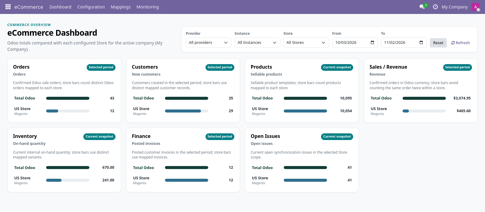
Instances manage external access and credentials; Stores define the sales-channel scope.
Link Odoo records to external identities and protect repeated synchronization.
Queue large operations in bounded batches with traceable execution.
Inspect issues, synchronization states, and queue activity without digging through logs.
Define external connection credentials, company and queue user at Instance level. Configure store-specific warehouse, currency, automation and schedules separately.
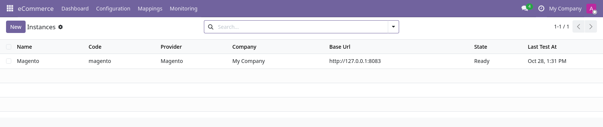
Use the Store synchronization wizard to select operations and target stores. Available Import, Export and Update actions depend on the installed connector.
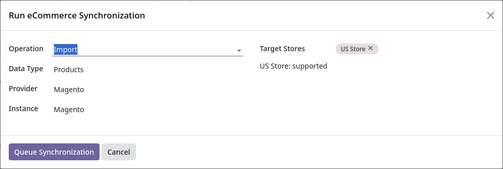
Maintain product descriptions, URL keys, SEO fields and media alt text in shared Odoo product fields.
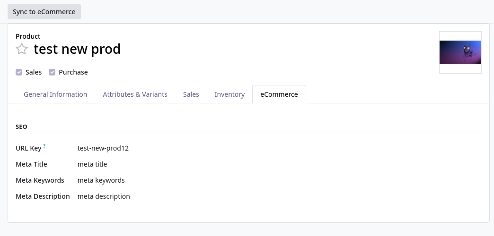
Use Sync to eCommerce from a product to choose target stores and an operation, with existing mapping status visible before submission.
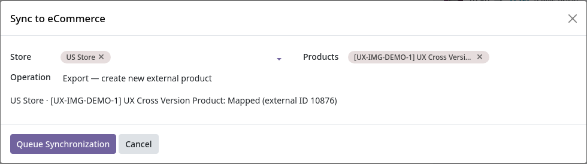
Store-scoped mappings connect products, variants, categories, customers, orders and other provider records to their Odoo counterparts.
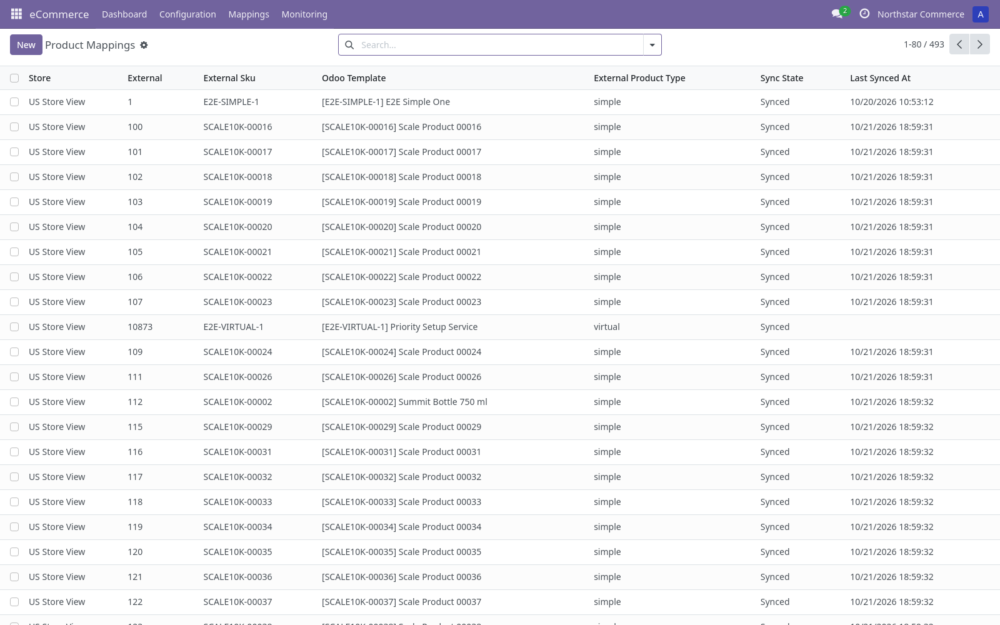
OCA queue_job coordinates jobs, bounded batches and retries. Connector-specific workers carry out the external operations.
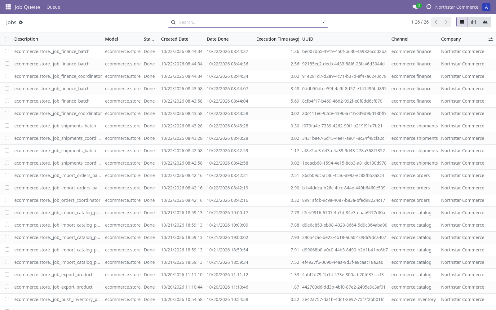
Synchronization issues help operators investigate failed or unsupported operations by store.
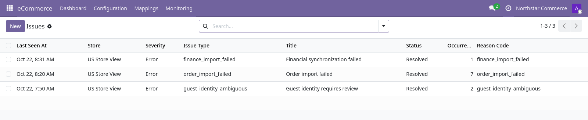
Track per-resource synchronization states, outcomes and progress for incremental processing.
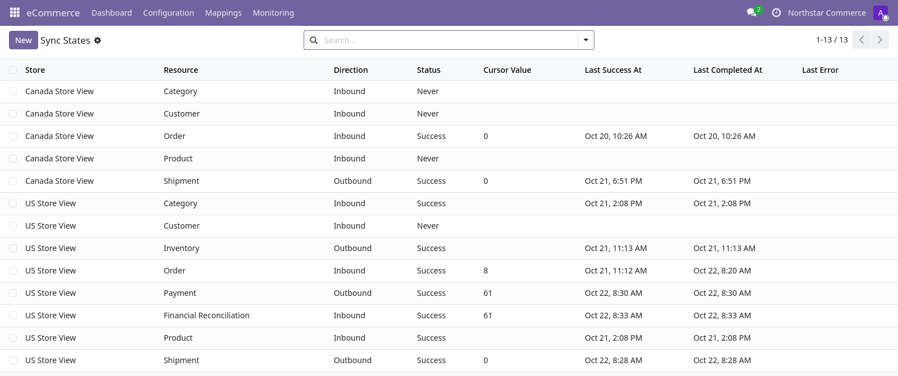
Configure resource intervals and batch sizes in the Store Scheduling tab.
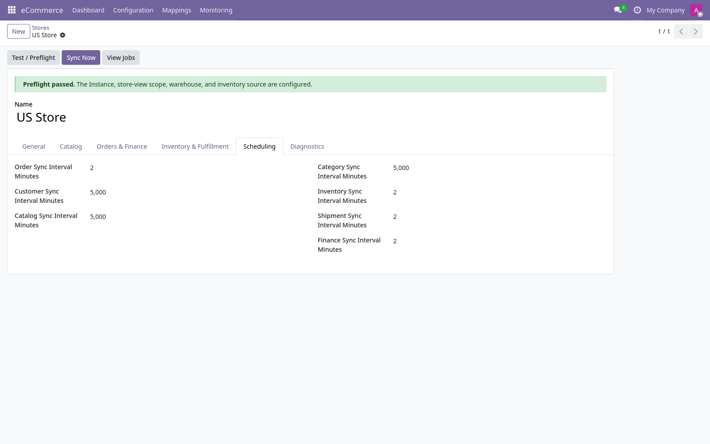
Separate eCommerce Manager, Operator and User permissions for credentials, synchronization and visibility.
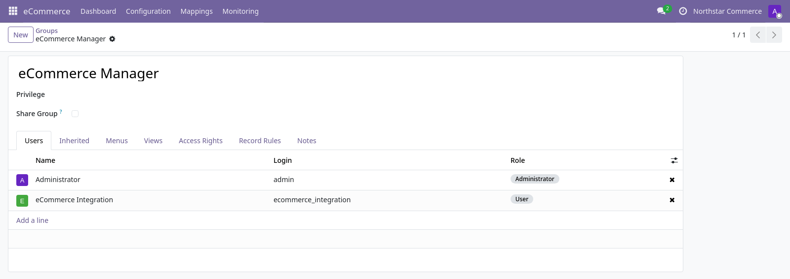
Follow these steps in order. Provider-specific configuration is supplied by the connector you install.
Install eCommerce Integration Core and OCA queue_job. Configure a working queue runner. Queue Job source: https://github.com/OCA/queue
Install a compatible connector for the external platform you want to integrate. Core alone does not call
external APIs. For Magento, get Magento Connector for Odoo
here:https://apps.odoo.com/apps/modules/19.0/odoo_ecommerce_magento
Open eCommerce / Configuration / Instances. Enter provider details, company, credentials and queue user. Run Test Connection where supported.
Open eCommerce / Configuration / Stores. Select the Instance and external store scope, then configure warehouse, currency and automation settings.
Configure resource intervals and batch sizes in the Scheduling tab. Assign appropriate eCommerce access groups.
Set up connector-required mappings. Start with supported categories and products, then customers and orders as applicable.
Review Monitoring / Queue Jobs, Synchronization Issues and Synchronization States. Resolve errors before enabling routine processing.
Base, Mail, Sales Management, Inventory, Accounting, Delivery, Website Sale and OCA queue_job.
A working OCA queue_job runner is required for background synchronization.
https://github.com/OCA/queue
Install a compatible provider connector for Magento or another platform. The Core does not include a provider API client.
Scope note: External API operations, platform-specific mappings and workflows depend on the connector. Core does not provide standalone webhooks, RMA processing or external API integration.
No. Core provides shared Odoo models, mappings, jobs and monitoring. Install a compatible provider connector to
communicate with an external platform. You can get Magento Connector for Odoo
here:https://apps.odoo.com/apps/modules/19.0/odoo_ecommerce_magento
The framework supports multiple Stores with company-scoped records and access controls. Configure each Store within the correct company.
OCA queue_job processes background work. The connector implements the platform-specific operations and determines supported resources.
No. Import, Export and Update depend on the capabilities implemented by the installed provider connector.
Review Queue Jobs, Synchronization Issues and Synchronization States in the eCommerce menus.
Demo: https://odoo.odoointegrator.id | Username: demo | Password: demo
Questions or implementation support: alfatihridhont@gmail.com
eCommerce Integration Core is a free provider-neutral foundation. A compatible connector and OCA queue_job are required for external synchronization.